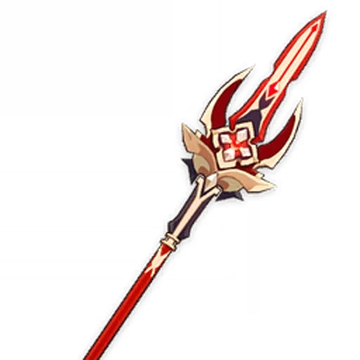

Best Weapons
- Crimson Moon’s Semblance (★★★★★)
Base ATK: 674
Bonus Stat: CRIT Rate 22.1%
Skill Effect: Grants a Bond of Life equal to 25% of Max HP when a Charged Attack hits an opponent. This effect can be triggered up to once every 14s. In addition, when the equipping character has a Bond of Life, they gain a 12% DMG Bonus; if the value of the Bond of Life is greater than or equal to 30% of Max HP, then gain an additional 24% DMG Bonus.
Obtained in the weapon banner of patch 4.6, april 24 - june 5 2024
Replacement Weapons:
*Hover over textStaff of Homa Staff of Homa (★★★★★):
Staff of Homa (★★★★★):
Bonus Stat: CRIT DMG + 14.4%
HP increased by 20%. Additionally, provides an ATK Bonus based on 0.8% of the wielder’s Max HP. When the wielder's HP is less than 50%, this ATK Bonus is increased by an additional 1% of Max HP.Primordial Jade Winged-Spear Primordial Jade Winged-Spear (★★★★★):
Primordial Jade Winged-Spear (★★★★★):
Bonus Stat: CRIT Rate + 4.8%
On hit, increases ATK by 3.2% for 6s. Max 7 stacks. This effect can only occur once every 0.3s. While in possession of the maximum possible stacks, DMG dealt is increased by 12%.Deathmatch Deathmatch (★★★★):
Bonus Stat: CRIT Rate + 8.0%
If there are at least 2 enemies nearby, ATK and DEF is increased by 16%. If there are less than 2 enemies nearby, ATK is increased by 24%.Blackcliff Pole Blackcliff Pole (★★★★):
Blackcliff Pole (★★★★):
Bonus Stat: CRIT DMG + 12.0%
After defeating an enemy, ATK is increased by 12% for 30s. This effect has a maximum of 3 stacks, and the duration of each stack is independent of the others.

Best Artifacts

Fragment of Harmonic Whimsy:
Fragment of Harmonic Whimsy is tailor-made for Arlecchino due to how often she applies and cleanses the Bond of Life effect, ensuring that the artifact set's passive almost has 100% uptime.
- 2-Piece Effect: ATK +18%
- 4-Piece Effect: Increases DMG based on Bond of Life changes.
Best artifact main stats:
- Sands: ATK%
- Goblet: Pyro DMG Bonus
- Circlet: CRIT Rate or CRIT DMG
Best artifact substats:
- CRIT Rate
- CRIT DMG
- Energy Recharge
- ATK%